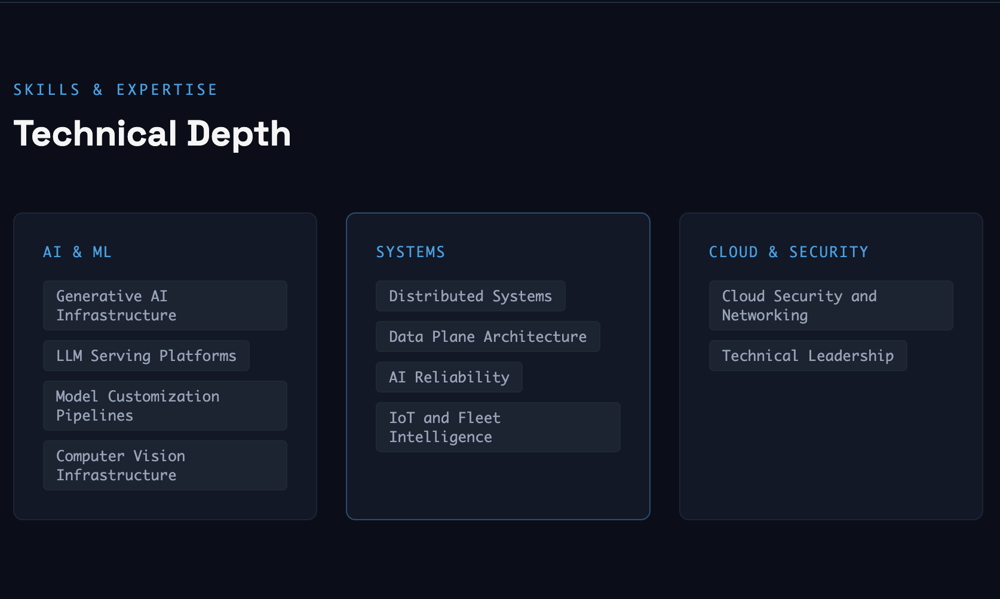

Senior SDE & Tech Lead · Amazon Bedrock
Avnish Kumar
AI infrastructure and distributed systems leader building production-scale systems for generative AI, computer vision, and IoT intelligence. Currently leading LLM hosting, prompt caching, and multimodal model customization on Amazon Bedrock. Former CTO and co-founder of an IoT/AI startup serving 100+ enterprise clients.
- 0-1A
- Extraordinary Ability
- Cornell
- MEng CS
- IIT Delhi
- MTech
Skills & Expertise
Technical Depth
Systems
Cloud & Security
Experience
Selected Impact
Senior Software Development Engineer, Tech Lead
Amazon Bedrock, AWS
- Designed and implemented GenAI hosting infrastructure for Anthropic models in Amazon Bedrock.
- Led architecture across networking, security, high availability, and performance-sensitive model-serving paths.
- Delivered prompt caching support, reducing customer cost by up to 90% and latency by up to 85%.
- Designed data ingestion systems for Bedrock multimodal model customization.
Software Development Engineer
Amazon Rekognition, AWS
- Led modernization of container patching for Amazon Rekognition Custom Labels.
- Architected an automated patching pipeline with rollback and guardrails.
- Improved disaster recovery from approximately 1 hour to near-instant recovery across environments.
- Won AWS Rekognition Hackathons in 2021 and 2023.
CTO and Co-Founder
Briston Technomach
- Co-founded an IoT/AI B2B startup in fuel and fleet management serving 100+ enterprise clients.
- Scaled the platform to monitor 3,000+ heavy equipment assets and manage 5 million liters of fuel.
- Launched AI-based preventive maintenance and real-time alerting for customer fleet operations.
- Led $150K seed fundraising from angel and seed investors in India.
Intellectual Property
Patents & Publications
U.S. Patents
Publications & Open Source
Community
Professional Service
From the PDF
Original profile direction, rebuilt as code.

Get in Touch
Let’s Connect
Open to conversations about AI infrastructure, distributed systems, research collaborations, and speaking opportunities.